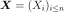
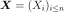
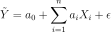

LinearModelAlgorithm¶
-
class
LinearModelAlgorithm(*args)¶ Class used to create a linear model from numerical samples.
Available usages:
LinearModelAlgorithm(Xsample, Ysample)
LinearModelAlgorithm(Xsample, basis, Ysample)
- Parameters
- XSample2-d sequence of float
The input samples of a model.
- YSample2-d sequence of float
The output samples of a model, must be of dimension 1.
- basis
Basis The
 basis .
basis .
See also
Notes
This class is used in order to create a linear model from data samples. The linear regression model between the scalar variable
 and the
and the  -dimensional vector  writes as follows:
-dimensional vector  writes as follows:where
 is the residual, supposed to follow the standard Normal
distribution, a functional basis.
The algorithm class enables to estimate the coefficients of the linear expansion.
is the residual, supposed to follow the standard Normal
distribution, a functional basis.
The algorithm class enables to estimate the coefficients of the linear expansion.If basis is not specified, the underlying model is :

- The coefficients
 are evaluated using a least squares method. Default
are evaluated using a least squares method. Default method is QR. User might choose also SVD or Cholesky (usefull if basis is orthogonal) and large dataset.
The evaluation of the coefficients is completed by some usefull parameters that could help the diagnostic of the linearity.
- Attributes
thisownThe membership flag
Methods
getBasis()Accessor to the input basis.
Accessor to the object’s name.
Accessor to the joint probability density function of the physical input vector.
getId()Accessor to the object’s id.
Accessor to the input sample.
getName()Accessor to the object’s name.
Accessor to the output sample.
Accessor to the computed linear model.
Accessor to the object’s shadowed id.
Accessor to the object’s visibility state.
hasName()Test if the object is named.
Test if the object has a distinguishable name.
run()Compute the response surfaces.
setDistribution(distribution)Accessor to the joint probability density function of the physical input vector.
setName(name)Accessor to the object’s name.
setShadowedId(id)Accessor to the object’s shadowed id.
setVisibility(visible)Accessor to the object’s visibility state.
-
getBasis()¶ Accessor to the input basis.
- Returns
- basis
Basis The basis which had been passed to the constructor.
- basis
-
getClassName()¶ Accessor to the object’s name.
- Returns
- class_namestr
The object class name (object.__class__.__name__).
-
getDistribution()¶ Accessor to the joint probability density function of the physical input vector.
- Returns
- distribution
Distribution Joint probability density function of the physical input vector.
- distribution
-
getId()¶ Accessor to the object’s id.
- Returns
- idint
Internal unique identifier.
-
getInputSample()¶ Accessor to the input sample.
- Returns
- inputSample
Sample The Xsample which had been passed to the constructor.
- inputSample
-
getName()¶ Accessor to the object’s name.
- Returns
- namestr
The name of the object.
-
getOutputSample()¶ Accessor to the output sample.
- Returns
- outputSample
Sample The Ysample which had been passed to the constructor.
- outputSample
-
getResult()¶ Accessor to the computed linear model.
- Returns
- result
LinearModelResult The linear model built from numerical samples, along with other useful informations.
- result
-
getShadowedId()¶ Accessor to the object’s shadowed id.
- Returns
- idint
Internal unique identifier.
-
getVisibility()¶ Accessor to the object’s visibility state.
- Returns
- visiblebool
Visibility flag.
-
hasName()¶ Test if the object is named.
- Returns
- hasNamebool
True if the name is not empty.
-
hasVisibleName()¶ Test if the object has a distinguishable name.
- Returns
- hasVisibleNamebool
True if the name is not empty and not the default one.
-
run()¶ Compute the response surfaces.
Notes
It computes the response surfaces and creates a
MetaModelResultstructure containing all the results.
-
setDistribution(distribution)¶ Accessor to the joint probability density function of the physical input vector.
- Parameters
- distribution
Distribution Joint probability density function of the physical input vector.
- distribution
-
setName(name)¶ Accessor to the object’s name.
- Parameters
- namestr
The name of the object.
-
setShadowedId(id)¶ Accessor to the object’s shadowed id.
- Parameters
- idint
Internal unique identifier.
-
setVisibility(visible)¶ Accessor to the object’s visibility state.
- Parameters
- visiblebool
Visibility flag.